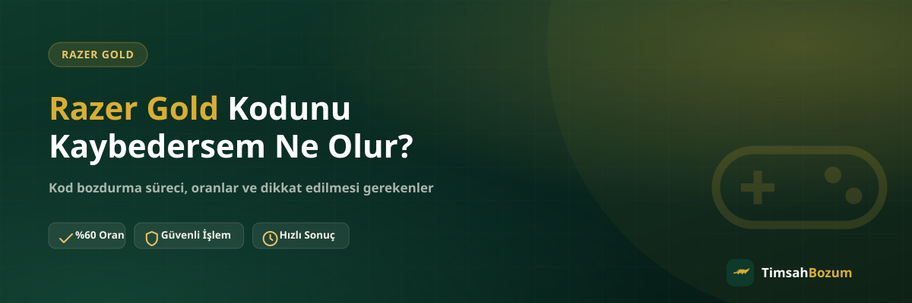

Elinde kullanmadığın bir Razer Gold kodu varken onu bir yerde unutmak ya da ekran görüntüsünü bulamamak, kullanıcıların en çok kaygılandığı durumlardan biri. Kodun değeri karta yazılı bir rakam gibi görünse de, aslında kodu kim görürse onu kullanabilir. Bu yazıda kodunu kaybettiğinde gerçekte ne olduğunu, bu durumun neden geri döndürülemediğini ve kaybı önceden önlemek için neler yapabileceğini anlatıyoruz.
Razer Gold Kodu Neden Sahiplik Bilgisi Taşımaz?
Razer Gold kodu, fiziksel veya dijital bir kart üzerinde basılı, tek kullanımlık bir PIN'dir. Kod herhangi bir isme, telefon numarasına veya hesaba otomatik olarak bağlı değildir; bağlanma işlemi, kodun bir oyun hesabına yüklenmesiyle gerçekleşir. Yüklenmeden önce kod, kimin elindeyse ona ait gibi davranır: kodu gören ve sisteme ilk giren taraf, değerini kullanabilir. Bu özellik hem kodun hızlı ve pratik kullanılmasını sağlar hem de kaybolduğunda geri alınamamasının temel sebebidir.
Kodu Kaybedersen Gerçekte Ne Olur?
Kod elinden çıktığında, yani kimseyle paylaşmadığın hâlde fiziksel kartı kaybettiysen veya dijital kodu sakladığın yeri bulamıyorsan, kodun değeri kaybolmuş sayılır. Bu, nakit para ya da kullanılmamış bir hediye kartını kaybetmekle aynı mantıkta işler: kodu kimse görmedi diye bir "yedek" oluşmaz, kod sistemde pasif durur ama sana geri döndürülmez. Kodu daha sonra bulursan tabii ki yine geçerlidir; sorun yalnızca kodu bulamadığın sürece değerinden yararlanamamandır.
Kayıp Bir Kodu TimsahBozum Geri Getirebilir mi?
Hayır. Bozum hizmeti, elinde olan bir kodu değerlendirmeye dayanır; elinde olmayan, yani kaybolmuş bir kodu aramak veya bulmak hizmetin kapsamında değildir. Kod hangi mağazadan alındıysa, kodun kendisine dair kayıt da genelde o satın alma noktasında tutulur; TimsahBozum'un kodun içeriğine veya geçmişine erişimi yoktur, sadece sana ilettiğin kod bilgisi üzerinden işlem yapar. Bu yüzden kodu kaybettiysen yapılabilecek ilk ve en gerçekçi adım, kodu bulmaya çalışmaktır.
Kodu Oyun Hesabına Yüklediysen Durum Değişir mi?
Kodu kaybetmekle, kodu bir hesaba yükleyip sonra o hesaba erişimini kaybetmek farklı durumlardır. Kod bir oyun hesabına yüklendiğinde artık ayrı bir kod olarak değil, o hesabın Razer Gold bakiyesi olarak var olur. Bu noktadan sonra kod tabanlı bozum süreci geçerli değildir, çünkü bozdurulacak bir kod kalmamıştır; değer artık bir hesap bakiyesine dönüşmüştür. Bu yüzden "bozdurayım mı, hesabıma mı yükleyeyim" kararını kod hâlâ elindeyken vermen, ileride karışıklık yaşamamak için önemlidir.
Kod Kaybını Önlemek İçin Neler Yapabilirsin?
Kodu aldığın andan itibaren tek ve net bir yerde saklamak en basit önlemdir. Kodu birden fazla not uygulamasına, sohbete veya ekran görüntüsüne dağıtmak, hangi kopyanın güncel ve doğru olduğunu unutmana yol açabilir. Kullanmayacağına karar verdiğin bir kodu uzun süre beklemeden değerlendirmek de riski azaltır; kod ne kadar uzun süre ortada dururso, kaybolma veya yanlışlıkla silinme ihtimali de o kadar artar.
Kodu Paylaşmadan Önce Fotoğraf mı Yazı mı Daha Güvenli?
Kodu WhatsApp'a aktarırken net bir ekran görüntüsü göndermek, karakterleri elle yazmaktan genelde daha güvenlidir. Elle yazarken büyük I ile küçük l, ya da O ile 0 gibi karakterler karışabilir; bu da bilginin yanlış iletilmesine ve gereksiz yere zaman kaybına yol açar. Ekran görüntüsünü gönderdikten sonra da orijinal kodu bir süre silmemen, teyit sürecinde bir tutarsızlık çıkarsa referans olarak elinde kalması açısından faydalıdır.
Kodu Kaybettiğini Fark Ettiğinde İlk Ne Yapmalısın?
Önce panik yapmadan kodu nerede sakladığını hatırlamaya çalış: satın alma onayı gelen e-posta, mesaj geçmişi, fotoğraf galerisi veya not uygulamaları en sık kodun saklandığı yerlerdir. Kodu bulursan hâlâ geçerli olup olmadığını WhatsApp'tan teyit ederek öğrenebilirsin. Kodu hiçbir şekilde bulamıyorsan, elinde paylaşabileceğin bir bilgi kalmadığı için işlem başlatılamaz; bu durumda yapılabilecek en gerçekçi şey, benzer bir kayıp yaşamamak için bundan sonraki kodları daha dikkatli saklamaktır.
Birden Fazla Kodun Birini Kaybettiysen Diğerleri Etkilenir mi?
Hayır, her Razer Gold kodu kendi başına bağımsız bir değer taşır. Elinde birkaç kod varsa ve bunlardan sadece birini kaybettiysen, diğer kodların geçerliliği veya bozdurulabilirliği bundan etkilenmez. Yine de bu durum, kalan kodları aynı dağınık şekilde saklamaya devam etmek için bir sebep değildir; aksine, bir kodu kaybetmiş olman, elindeki diğer kodları daha dikkatli bir yerde toplamak için bir uyarı olarak değerlendirilebilir. Kalan kodları tek bir mesajda toplu şekilde bildirmek, her biri için ayrı ayrı yazmaktan daha hızlı sonuç verir.
Bozdurma Süreci Nasıl İşler?
Kodun elinde ve okunaklı olduğundan eminsen süreç basittir: Razer Gold bozdurma hattımızdan kod bilgini paylaşırsın, güncel oranı teyit edersin, onay sonrası ödemen WhatsApp üzerinden görüşülen yöntemle yapılır. Üyelik, form doldurma veya kimlik belgesi gerekmez, hesabına erişim istenmez. Kod tabanlı bir hizmet olduğu için kısmi bozum yapılmaz; kodun tam değeri tek seferde değerlendirilir. Oranlar zamanla güncellenebileceği için işlem öncesi güncel oranı WhatsApp'tan teyit etmek en doğrusu.
İlgili Yazılar
- Razer Gold Kodu Kullanılmışsa Ne Olur?
- Razer Gold PIN Kodu Paylaşırken Güvenlik Önlemleri
- Razer Gold Kodu Ne Zaman Kullanılmalı, Süresi Dolar mı?
Elinde hâlâ kaybolmamış bir Razer Gold kodu varsa ve değerlendirmek istiyorsan, WhatsApp hattımızdan yazarak güncel oranı öğrenip işlemini bugün başlatabilirsin.